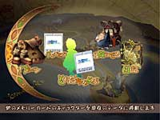
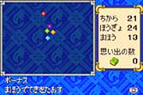
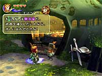
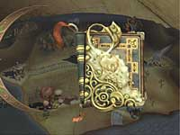

N.O.M 最初のコンセプトはどういったものだったんでしょう。
青木 まず今回のコンセプトが、"ニンテンドーゲームキューブ（以下：GC）とゲームボーイアドバンス（以下：GBA）をつないで遊ぶ"というものだったんです。どうしたらいちばん面白いかというのは、GBA側に個人情報を持ってきて、それを友達に見せたり見せなかったりという駆け引きをしながら多人数で遊ぶというのが面白いんじゃないかと。例えば４人プレイなら、４人とも最初から最後まで一緒にいなくても、途中で誰が入っても状況がわかるようにということにしたんですね。そのために、手紙とか日記というものを取り入れているんですが。常にそのメンバーが最初から最後まで一緒にいなくても、その世界観を味わいながら続けることができるようになっているんですよ。
N.O.M FFシリーズのナンバーがついていない作品にしたのはなぜですか？
青木 いままでFFというのはストーリー主体だったんですが、それとは別の遊び方になるなということで、"クリスタルクロニクル"という新しい形のものにしたんです。FFという世界のなかだということではあるので、魔法やモンスターで同じようなものが出てきます。その土台を使って、全く新しい遊びをというのを考えていたんですね。
N.O.M アクション要素が強いのはなぜでしょうか。
青木 最初はFFでおなじみのATB(アクティブタイムバトル)を考えてみたんですが、みんなで協力して遊んでもらいたい、そのなかで個人の所(コントローラとして使うGBA)に表示される画面をチームワークを活かして扱って欲しいというのがあったんです。その部分を考えると、ターン制よりは常にリアルタイムで動くものの方が、それぞれのやり方やチームとしての個性が出るんじゃないかということで、アクション要素を強めたんです。
板鼻 戦闘シーンでは従来のようにコマンド入力をチマチマして、ってことではなくて、できるだけ時間を止めない形でプレイできるように工夫しました。
N.O.M レベルなんかもありませんね。
青木 例えばレベル50の人の所にレベル１の人が入っても、なかなかレベル１の人が活躍できない…ということになりますよね。このゲームはプレイしていれば徐々に強くなってはいくんですが、強さはアーティファクトと武器防具を仲間にあげたりもらったりすればパワーアップできるんですね。新しく入って来た人だからといって、お邪魔キャラにならないで楽しく遊べるようにと、極端なレベル差というのが出ないようにしたかったんです。
N.O.M 今回いちばん手こずった点はどこですか？
青木 全部です(笑)。このゲームに関しては、すべての要素が何もかも初めてだったので、本当にこれでいけるのかどうか、というトライアンドエラーの連続でした。
板鼻 ひとつの画面で４人を自由に動き回って遊ばせるという点では、いろいろ試行錯誤しました。本当は画面を四分割してしまえば楽なんですが、それだとつまらないだろうということで。みんなでやってるなら、声をかけあって同じ画面でやって欲しいなと。
N.O.M ストーリーに関してですが、どういった形で流していこうという姿勢だったんでしょうか。
青木 今回はどこで誰が入ってくるか分からないので、ストーリーに関しては必要最低限の状況説明が出来るだけの下地を作ったんです。途中で誰かが入って来たら、その世界観を分かってもらって遊べるような形にしたので、ストーリーに重点を置いた作りにはしていないんです。基本的には名もない人間たちがその世界で暮らして、生き延びていこうとしているというのを淡々と描いているという感じですね。ストーリーを追うよりも、ゲームの雰囲気を楽しんで貰うという方が大切だと思っています。
板鼻 軽いノリで街道でのイベントなんかも起きるんですが、それをよく見てみると現在の世界がなぜこうなったのかとか、ダンジョンの仕掛けに関してのヒントもあったりするんですよ。だからよく見ていると面白いと思います。
N.O.M FFの世界観を受け継いでいるというと、どのあたりでしょう。
青木 これは従来のFFよりも以前というか、前世紀的なイメージではあるんですね。例えばクリスタルも出てきますが、その効能なんかもナンバリングシリーズのFFで出てくるクリスタルの力とは違うものなんです。いまのFFのクリスタルになりきっていないクリスタル、というイメージなんですよ。 |